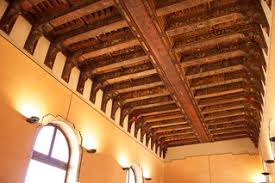
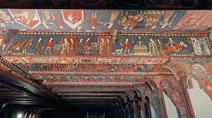
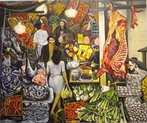
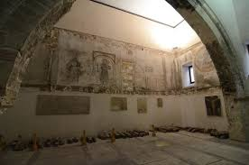

-IL PALAZZO CHIAROMONTE-STERI-
Edificato nel 1307 da Manfredi I della famiglia Chiaramonte, il palazzo rappresenta il primo esempio del cosiddetto stile chiaramontano, uno stile architettonico che sorse in Sicilia all’inizio del ‘300. Solenne nella struttura, il Palazzo, noto anche come Steri - da Hosterium, palazzo fortificato - presenta sulla facciata bifore, trifore e al suo interno eleganti colonnati. La sala “terrana” o delle Armi, usata con molta probabilità per le udienze, risale proprio alla prima residenza chiaramontana. Dopo la caduta della famiglia Chiaramonte il Palazzo fu anche la sede dei viceré spagnoli tra il 1468 e il 1517 nonché del Tribunale dell’Inquisizione dal 1601 al 1782, le cui prigioni con i graffiti lasciati dai condannati in alcune celle delle Carceri sono oggi visitabili. Negli anni Cinquanta il Palazzo è stato restaurato dal celebre architetto Carlo Scarpa. Tra gli ambienti più importanti del Palazzo spicca la Sala Magna o dei Baroni, al primo piano, ove è possibile ammirare i dipinti del soffitto ligneo eseguito fra il 1377 e il 1380 da Cecco di Naro, Simone da Corleone e Pellegrino Darena da Palermo. Il soffitto con le sue scene dipinte è considerato un vero e proprio trattato di storia medievale. Al secondo piano si trova la Sala delle Capriate. Oltre alle splendide trifore parietali qui è possibile ammirare alcuni dipinti settecenteschi provenienti dalla Galleria Interdisciplinare Regionale della Sicilia di Palazzo Abatellis. All'interno del Palazzo, oggi sede del rettorato dell’Università di Palermo, è custodito il celebre dipinto la Vucciria di Renato Guttuso.
-Il soffitto ligneo della Sala dei Baroni-
Il magnifico soffitto dipinto copre interamente la “sala magna” del primo piano per una larghezza di circa 8,50 m e una lunghezza di 27,50 m ed una altezza di circa 8,00 il soffitto è costituito da ventiquattro travi a sezione rettangolare appoggiate su mensole lignee. L’apparato decorativo comprende più di 600 m2 di superfici dipinte, riunendo un numero straordinario di immagini, storie e ornamentazioni, concepiti come messaggio didattico morale e politico del dominus Manfredi. Nelle rappresentazioni vanno rilevate le tracce di quel vastissimo repertorio figurativo che, per i temi moralistici e didascalici, rivela un'immagine fedele della società isolana del Trecento. Fra i tanti temi trattati, i tornei cavallereschi, l'esaltazione della donna e la rivisitazione del passato nel suo momento di massima esaltazione epica e romanzesca: un repertorio d'immagini e di motivi decorativi. Si trovano raffigurate scene dell’Antico Testamento, cicli di battaglie epiche, episodi della vita di Re Artù e Carlo Magno, scene d’amore di Tristano e Isotta, scritte, temi geometrici e vegetali. In merito alla funzione di questa sala vi sono diverse ipotesi, ma l’ipotesi più accreditata fa della Sala Magna la sala di rappresentanza per eccellenza. Lo dimostra la presenza di diversi stemmi dipinti alla base di ogni trave e la presenza di scene più prettamente maschili come scene di guerra o di caccia. L’intento di Manfredi III Chiaramonte era quello di mostrare la propria potenza e ricchezza ai nobili dell’epoca e rappresentava anche un monito per questi a rimanere al proprio posto e ad obbedire. La decorazione della quarta trave si chiude con l’altrettanto celebre immagine di Aristotele cavalcato dalla cortigiana, sotto lo sguardo di riprovazione di Alessandro Magno, discepolo del filosofo, e della sua consorte. La fonte scritta della leggenda è il noto Lai d’Aristotele composto nel XIII secolo e attribuito a Henri de Valencienne75, che narra come il filosofo, dopo avere avvertito Alessandro sui pericoli dei lacci amorosi, ne resta vittima lui stesso. Nella raffigurazione dello Steri non è l’amante di Alessandro Magno in persona a sedurre Aristotele ma una sua cameriera, cosa che spiegherebbe la presenza dei due personaggi affacciati dalla torre alle spalle dello sventurato filosofo.


-La Vucciria, di Renato Guttuso (Olio su tela, 1974)-
La Vucciria è considerato il quadro più celebre di Renato Guttuso. È stato realizzato a Roma nel 1974.Nel grande quadro, tre metri per tre metri, realizzato olio su tela, è riprodotto un angolo caratteristico del mercato “Vucciria” di Palermo. A dare l’atmosfera si notano il via vai dei passanti, i prodotti tipici, il crudo realismo delle carni esposte, le cassette di pesci, la frutta, verdura. Sono ritratti più di ottanta prodotti in vendita.Colpisce l’uso sapiente dei colori che vanno dal giallo delle banane al rosso dei pomodori, dal rosa pallido del pesce spada al verde della cicoria e della lattuga e al bianco dei formaggi e del marmo in cui è adagiato il pesce spada. Le cassette ritratte in basso a sinistra sono ricche di pesci e crostacei, un tripudio di colori e sapori. A destra un quarto di bue pende da un gancio e sembra il protagonista principale del quadro. Le persone ritratte, ben dodici figure tra mercanti e compratori, attraversano lo stretto “cunicolo” tra le bancarelle,le strade in cui si snoda il mercato sono molto strette e ricordano i suk arabi. La donna in primo piano è vestita completamente di bianco, non ha volto, è ripresa di spalle. È messa in evidenzia dal colore candido che la isola dal resto della composizione ricca di colori. Tra le grandi lampade che sembrano tremare, la donna incrocia un uomo dalla maglia gialla, i due si incrociano senza guardarsi. L’uomo appare malinconico. Pure assorta nei propri pensieri sembra la donna anziana che avanza con il volto mesto e il vestito nero. Tutti i personaggi sembrano immersi nelle proprie riflessioni e non si scambiano sguardi, un segno dell’incomunicabilità che affligge i tempi moderni.

-I graffiti dei detenuti nelle carceri-
Allo Steri si trovano le carceri dell’Inquisizione, dette Filippine, costruite al tempo di Filippo III, l’Ostello Magno, costruito da Manfredi Chiaromonte nel XIV secolo. Da abitazione dei Vicerè, l’edificio con le parti accluse era divenuto dimora degli inquisitori del tribunale e dell’annesso reclusorio, poi passato, dopo la cessazione dell’ inquisizione ad essere Tribunale civile, e oggi sede del Rettorato dell’università. Durata quasi tre secoli, dal 1487 al 1782, l’Inquisizione, armata di strumenti di tortura, si accaniva su uomini e donne. I graffiti erano realizzati con punteruoli, primitivi pennelli, utilizzando come pigmento sangue, piscio, feci, fumo di candela, mattoni d’argilla, latte, albume d’uovo, succo di limone, cera, i palinsesti ricoprono le pareti da terra al soffitto, fino a cinque metri. Ci sono scritte in quattro lingue (siciliano, latino, inglese, arabo-giudaico), graffiti con firme, date, simboli esoterici, personaggi religiosi, donne, navi, oggetti, carte geografiche, architetture, piante, animali, motivi decorativi. Nella cella numero 2 del piano terra è raffigurato il Leviatano, enorme pesce dalla bocca spalancata. Divora i patriarchi dell’Antico Testamento e i progenitori inginocchiati che si rivolgono imploranti al Cristo, il quale regge uno stendardo. Segno del desiderio irrefrenabile di sfuggire alla propria condizione, speranza posta in un miracoloso intervento divino, unica possibilità che forse si poteva contemplare dal fondo della Bestia infernale, che li aveva inghiottiti e lentamente masticati. Al di sopra dell’Animale biblico c’è una testimonianza in lingua inglese di un condannato a morte che è stato risparmiato.
